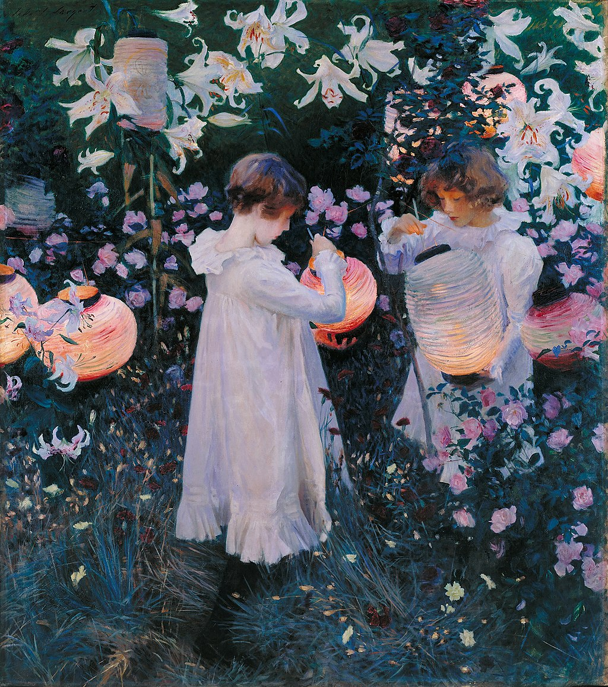

<head>
<meta charset="UTF-8" />
<meta name="keywords" content="drawing, painting" />
<meta name="description" content="drawings by Sunjy" />
<title>Sunjy</title>
<link rel="shortcut icon" type="image/x-icon" href="../../mImages/mCommon/favicon.ico" media="screen" />
<link rel="stylesheet" type="text/css" href="../../mCsses/mCommon/mCssA.css" />
<link rel="stylesheet" type="text/css" href="../../mCsses/mCommon/mCssB.css" />
<link rel="stylesheet" type="text/css" href="../../mCsses/mCommon/mCssC.css" />
<link rel="stylesheet" type="text/css" href="../../mCsses/mCommon/mCssD.css" />
<link rel="stylesheet" type="text/css" href="../../mCsses/mContent/mCssA.css" />
<link rel="stylesheet" type="text/css" href="../../mCsses/mContent/mCssB.css" />
<link rel="stylesheet" type="text/css" href="../../mCsses/mContent/mCssC.css" />
<link rel="stylesheet" type="text/css" href="../../mCsses/mContent/mCssD.css" />
</head>
<script type="text/javascript" src="../../mScripts/mContent/mContentAA.js" /></script>
<script type="text/javascript" src="../../mScripts/mContent/mContentAB.js" /></script>
<script type="text/javascript" src="../../mScripts/mContent/mContentAC.js" /></script>
<script type="text/javascript" src="../../mScripts/mContent/mContentAD.js" /></script>
<script type="text/javascript"></script> 
<script type="text/javascript">
document.write('<div class="mImgAbsolute"></div>');
/*
document.write('<p class="mFontSizeBColor" />From a white paper...</p>');
document.write('<table class="center"><tr><td>');
document.write('');
document.write('</td></tr></table>');
*/
</script>


<script type="text/javascript">
document.write('<p class="mFontSizeBColor" />Carnation, Lily, Lily, Rose</p>');
document.write('<p class="mFontSizeSColor" />“Carnation, Lily, Lily, Rose” by John Singer Sargent depicts two small children who are lighting Japanese lanterns with tapers on a twilit summer evening.<br><br>The two young girls dressed in white are in a garden dominated by green foliage, full of pink roses, with a selection of yellow carnations and tall white lilies above them. <br><br>The viewer’s perspective is set at an adult’s eye level, looking down on the children and the lanterns.<br><br>The two girls in the painting are the daughters of the illustrator Frederick Barnard, a friend of Sargent’s. Dolly, on the left, was 11 years old and Polly, on the right, seven years old.<br><br>The title of the painting comes from a popular song at the time called “Ye Shepherds Tell Me” by Joseph Mazzinghi. The lyrics reference Flora wearing “A wreath around her head, around her head she wore, Carnation, lily, lily, rose.”<br><br>Ye Shepherds tell me,<br>Tell me have you seen,<br>Have you seen My Flora pass this way?<br>In shape and feature beauty’s queen,<br>In pastoral, in pastoral array.<br><br>A wreath around her head,<br>around her head she wore,<br>Carnation, lily, lily, rose,<br>And in her hand a crook she bore,<br>And sweets her breath compose.<br>– “Ye Shepherds Tell Me” by Joseph Mazzinghi<br><br>The work is set in an English garden in the Cotswolds, England, where Sargent spent the summer of 1885 with his friend, Francis Davis Millet.<br><br>Sargent started the painting shortly after moving to England from Paris to escape the scandal caused by his 1884 painting Portrait of Madame X.<br><br>The author Robert Louis Stevenson was also staying there while writing “A Child’s Garden of Verses.” The two became friends, and Stevenson’s verses inspired Sargent in the direction of painting this enchanted children’s world.<br><br>Sargent also took inspiration from the lanterns that he saw hanging among trees and lilies while boating on the River Thames. Sargent saw Chinese lanterns hung among the trees and beds of lilies from his river view. The impression left him with a visual image that he wanted to use in one of his compositions.<br><br>Sargent also wanted to capture the exact level of light at dusk, so he painted the picture outdoors and in the Impressionist manner. This painting is one of the few finished pictures that the artist painted out of doors in England.<br><br>Every day from September to November 1885, he painted in the few minutes when the light was perfect, giving the picture an overall purple tint of the evening.<br><br>As the flowers in the garden died as autumn arrived, Sargent resorted to painting flowers in pots.<br><br>Sargent resumed painting the following summer at Millet’s new home nearby and finally finished the painting by the end of 1886.<br><br>During the creative process, Sargent cut down the rectangular canvas to make it a square shape.<br><br>The work received a mixed reception at the Royal Academy summer exhibition in 1887. However, Frederic Leighton, President of the Royal Academy, encouraged the Tate Gallery to buy the painting.<br><br>It was the first of Sargent’s artworks to be acquired by a public museum.<br></p>');
document.write('<table class="center" /><tr><td>');
document.write('<br>The two young girls dressed in white are in a garden dominated by green foliage, full of pink roses, with a selection of yellow carnations and tall white lilies above them. <br><br>The viewer’s perspective is set at an adult’s eye level, looking down on the children and the lanterns.<br><br>The two girls in the painting are the daughters of the illustrator Frederick Barnard, a friend of Sargent’s. Dolly, on the left, was 11 years old and Polly, on the right, seven years old.<br><br>The title of the painting comes from a popular song at the time called “Ye Shepherds Tell Me” by Joseph Mazzinghi. The lyrics reference Flora wearing “A wreath around her head, around her head she wore, Carnation, lily, lily, rose.”<br><br>Ye Shepherds tell me,<br>Tell me have you seen,<br>Have you seen My Flora pass this way?<br>In shape and feature beauty’s queen,<br>In pastoral, in pastoral array.<br><br>A wreath around her head,<br>around her head she wore,<br>Carnation, lily, lily, rose,<br>And in her hand a crook she bore,<br>And sweets her breath compose.<br>– “Ye Shepherds Tell Me” by Joseph Mazzinghi<br><br>The work is set in an English garden in the Cotswolds, England, where Sargent spent the summer of 1885 with his friend, Francis Davis Millet.<br><br>Sargent started the painting shortly after moving to England from Paris to escape the scandal caused by his 1884 painting Portrait of Madame X.<br><br>The author Robert Louis Stevenson was also staying there while writing “A Child’s Garden of Verses.” The two became friends, and Stevenson’s verses inspired Sargent in the direction of painting this enchanted children’s world.<br><br>Sargent also took inspiration from the lanterns that he saw hanging among trees and lilies while boating on the River Thames. Sargent saw Chinese lanterns hung among the trees and beds of lilies from his river view. The impression left him with a visual image that he wanted to use in one of his compositions.<br><br>Sargent also wanted to capture the exact level of light at dusk, so he painted the picture outdoors and in the Impressionist manner. This painting is one of the few finished pictures that the artist painted out of doors in England.<br><br>Every day from September to November 1885, he painted in the few minutes when the light was perfect, giving the picture an overall purple tint of the evening.<br><br>As the flowers in the garden died as autumn arrived, Sargent resorted to painting flowers in pots.<br><br>Sargent resumed painting the following summer at Millet’s new home nearby and finally finished the painting by the end of 1886.<br><br>During the creative process, Sargent cut down the rectangular canvas to make it a square shape.<br><br>The work received a mixed reception at the Royal Academy summer exhibition in 1887. However, Frederic Leighton, President of the Royal Academy, encouraged the Tate Gallery to buy the painting.<br><br>It was the first of Sargent’s artworks to be acquired by a public museum.<br>" />');
document.write('</td></tr></table>');
</script>


